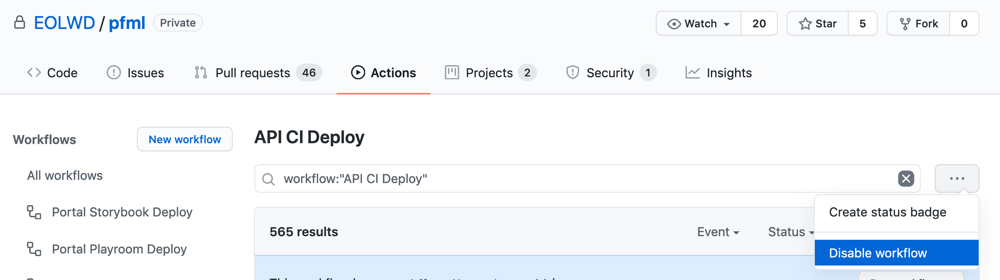
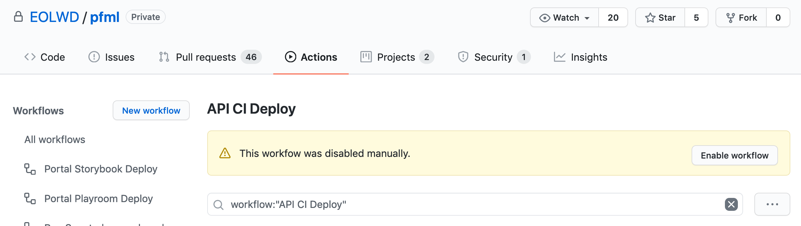

Deployment
Deployments to all environments are managed through GitHub Actions.
The main branch is automatically deployed to test as pull requests are merged into it.
Unlike deployments to test, all deployments to training, performance, stage and prod are triggered manually.
Triggering a deployment
To deploy the portal:
-
Visit the Portal Deploy action homepage on GitHub.
-
Click the "Run workflow" button, and fill in the inputs:
- For the "Use workflow from" dropdown, select the deployment branch corresponding to your target environment using the table below. This input identifies the environment you will be deploying to.
- For the second input, provide a
versionto deploy. Aversioncan be either the name of a git tag, or the name of any git branch.
-
Click the green "Run workflow" button.
Branch-to-environment mapping
In the past, pushes to these 'deployment branches' were the triggering event that caused new deployments to begin. Today, these branches serve an archival role: they record what commit was deployed to which environment at what time.
| Name of deployment branch | Corresponding env |
|---|---|
| main | test |
| deploy/portal/stage | stage |
| deploy/portal/prod | prod |
| deploy/portal/performance | performance |
| deploy/portal/training | training |
Communications
If you are testing a feature branch on the test environment, please go through the following additional steps:
- Communicate to #mass-pfml-engineering. "⚠️ I'll be using the Portal test environment soon, please let me know if you have any concerns."
- After running the workflow, click the "Disable Workflow" button (see below) to prevent auto-deploys from overriding your deployment.
- After testing is finished, click the "Enable Workflow" button and update the Slack channel.


Storybook
The Storybook site,
used for visualizing our components, is exported and deployed automatically when pull requests are merged
into the main branch. Only one environment (test) exists for the Storybook site.